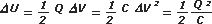

NO ME SALEN
(APUNTES TEORICOS Y EJERCICIOS DE BIOFÍSICA DEL CBC)
ELECTRICIDAD
|
|

|
| |
 |
13) Un condensador de 1 μF se carga a 1300 V mediante
una batería. Se desconecta de la batería, y se conecta
inmediatamente a los extremos de otros dos
condensadores, previamente descargados, de 2 μF y
8 μF de capacidad, respectivamente, conectados entre
sí como se muestra en la figura. Calcular:
|
| |
a) la diferencia de potencial entre las placas del
primer condensador después de la conexión a los
otros dos;
b) la variación de energía electrostática asociada al proceso, en joules. |
 |
|
| |
 |
Lo primero que tenemos que saber antes de cerrar la llave, es qué carga entró en ese capacitor de 1 μF al someterlo a una diferencia de potencial de 1.300 V. Como para todo capacitor se cumple que Q = C ΔV, la carga resulta ser de 1,3 x 10-3 C (lo representé esquemáticamente con 6 carguitas).
Como ahora se desconecta la batería, el potencial variará de acuerdo a la distribución de cargas y a las nuevas capacidades del conjunto... pero la carga va a ser la misma, ya que no hay forma de crear nuevas ni aniquilar las que ya están. |
|
|
|
Al cerrar la llave el capacitor cargado queda conectado en paralelo con el conjunto de la serie de la derecha. Se hace complicado resolver esa conexión. Reemplacemos esa serie de la derecha por su equivalente: CES-1 = (2 μF)-1 + (8 μF)-1 , de modo que CES = 1,6 μF.
Ahora sí, como ves, las cargas se redistribuyen ubicándose una mayor cantidad donde hay más comodidad... donde hay más capacidad. Para saber exactamente las cantidades de la repartija podemos hacer esta cuenta: |
|
|
 |
ΔVA = ΔVES
QA /1 μF = QES /1,6 μF
O lo que es lo mismo:
QA . 1,6 = QES [1]
sin olvidar que
QA + QES = 1,3 x 10-3 C [2] |
|
|
si mirás la polaridad de las cargas, eso te ayuda a discriminar si una conexión es serie o paralelo |
Tenemos dos ecuaciones y dos incógnitas... yo te lo hago. De la [2] despejo QES ,
QES = 1,3 x 10-3 C — QA
Lo igualo con la [1]:
QA . 1,6 = 1,3 x 10-3 C — QA
Despejo QA
QA . 1,6 + QA = 1,3 x 10-3 C
QA . 2,6 = 1,3 x 10-3 C
QA = 0,5 x 10-3 C
Ahora podemos conocer la diferencia de potencial en el capacitor de 1 μF
ΔVA = QA / CA
ΔVA = 0,5 x 10-3 C / 1 μF
|
|
|
|
|
|
Como ves, obtenés la misma diferencia en el otro capacitor:
ΔVES = QES / CES
ΔVES = 0,8 x 10-3 C / 1,6 μF = 500 V
Podríamos conocer la diferencia de potencial en cada uno de los capacitores de la serie de la derecha. Sabemos que -como en toda serie- las cargas se repiten, de modo que:
QB = QC = 0,8 x 10-3 C
y como la diferencia de potencial es ΔV = Q / C
ΔVB = 0,8 x 10-3 C / 2 μF = 400 V
ΔVC = 0,8 x 10-3 C / 8 μF = 100 V
Como ves, la suma de las diferencias de potencial en la serie es igual a la diferencia en el equivalente de la serie.
Ya sabemos todo lo que necesitamos para calcular la energía acumulada en cada capacitor antes y después de cerrar la llave. Podemos usar cualquiera de estas expresiones equivalentes: |
|
|
 |
|
|
Antes de cerrar la llave teníamos:
UA = 0,845 J ; UB0 = 0 J ; UC0 = 0 J y la total UT0 = 0,845 J
Después de conectar la rama derecha:
UAF = 0,125 J ; UBF = 0,160 J ; UCF = 0,040 J y la total UTF = 0,325 J
|
|
|
|
|
|
| Es lógico que la energía haya disminuido. Y la lógica pasa porque siempre que las cargas se reacomodan, se mueven solas, pasan de una posición menos estable a una más estable, de una posición más "alta" a una más "baja". Hay un dicho que reza: el agua siempre busca el punto más bajo... Pues las cargas hacen lo mismo: siempre "fluyen" hacia el lugar de menor energía potencial. |
|
|
| Desafío: sin hacer cuentas... ¿te animás a decir cuánta energía habría acumulado el capacitor equivalente de la serie de la derecha, si lo hubiésemos dejado como reemplazo de la serie? |
|
 |
| |
|
| Algunos derechos reservados.
Se permite su reproducción citando la fuente. La casa se reserva el derecho de admisión. Agradezco A Ricardo Amil por el reporte de una errata. Última actualización oct-07. Buenos Aires, Argentina. |
|
|
| | |
|
|